일반기계기사 (2014-09-20 기출문제)
1과목: 재료역학
1. 아래 그림과 같은 보에 대한 굽힘 모멘트 선도로 옳은 것은?
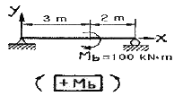
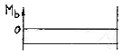
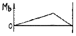
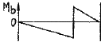
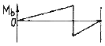
(정답률: 51%)

2. 지름이 d이고 길이가 L인 환축에 비틀림 모멘트가 작용하여 비틀림각 ø가 발생하였다. 이때 환축의 최대전단응력 τ은 얼마인가? (단, G는 전단탄성계수)
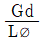
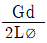
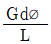
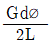
(정답률: 67%)
3. 어떤 축이 동력마력 H(KW)를 전달할 때 비틀림 모멘트T(Nㆍm)가 발생하였다면 이 때 축의 회전수를 구하는 식은?
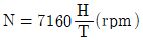
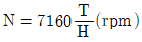
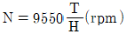
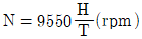
(정답률: 48%)
4. 길이 5m인 양단고정 보의 중앙에서 집중하중이 작용할 때 최대 처짐이 10cm 발생하였다면, 같은 조건에서 양단 지지보로 하면 처짐은 얼마가 되겠는가?
- 20cm
- 27cm
- 30cm
- 40cm
(정답률: 65%)
5. 바깥지름 d2=30cm, 안지름 d1=20cm의 속이 빈 원형 단면의 단면 2차모멘트는?
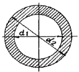
- 27850cm4
- 29800cm4
- 30120cm4
- 31906cm4
(정답률: 73%)
6. 안지름 80cm의 얇은 원통에 내압 1MPa이 작용할 때 원통의 최소 두께는 몇 mm 인가? (단, 재료의 허용응력은 80MPa이다.)
- 2.5
- 5
- 8
- 10
(정답률: 23%)
7. 그림과 같은 정사각형 판이 변형되어, 네 변이 직선을 유지한 채 A, B 접이 모두 수평 방향 우측으로 1 mm 만큼 이동되었다. D점에서의 전단변형률 γxy는?
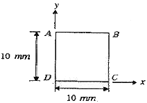
- 0.01
- 0.⑤
- 0.1
- 0.15
(정답률: 63%)
8. 외팔보 AB의 자유단에 브라켓 BCD가 붙어 있으며 D점에 하중 P가 작용하고 있다. B점에서의 처짐이 0이 되기 위한 a/L의 비는 얼마인가?
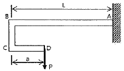
- 1/4
- 2/3
- 1/2
- 3/4
(정답률: 46%)
9. 지름이 50mm이고 길이가 200mm인 시편으로 비틀림 실험을 하여 얻은 결과, 토크 30.6 Nㆍm에서 전 비틀림 각이 7°로 기록되었다. 이 재료의 전단 탄성계수 G는 약 몇 MPa 인가?
- 81.6
- 40.6
- 66.6
- 97.6
(정답률: 71%)
10. σx=σy=0. τxy=0.1GPa 일 때, 두 주응력의 크기 σ1, σ2는?
- σ1=0.25GPa, σ2=0.1GPa
- σ1=0.2GPa, σ2=0.⑤GPa
- σ1=0.1Pa, σ2=-0.1GPa
- σ1=0.075GPa, σ2=-0.⑤GPa
(정답률: 64%)
11. 다음 그림에서 최대 굽힘 응력은?
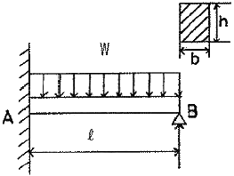
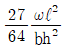
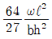
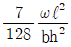
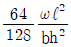
(정답률: 50%)
12. 단면의 형상이 일정한 재료에 노치(notch)부분을 만들어 인장할 떄 응력의 분포 상태는?
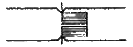
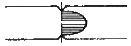
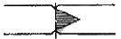
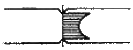
(정답률: 62%)
13. 봉의 온도가 25℃일 때 양쪽의 강성지점들에 끼워 맞추어져 있다. 봉의 온도가 100 ℃일 때 AC 부분의 응력은 몇 MPa 인가? (단, 봉 재료의 E=200 GPa, α=12×10-6/℃, L1=L2=0.5m, A1=1000mm2, A2=500mm2)
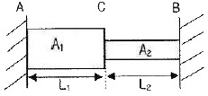
- 120
- 150
- 220
- 250
(정답률: 28%)
14. 그림과 같은 단순보에서 보 중앙의 처짐으로 옳은 것은? (단, 보의 굽힘 강성 EI는 일정하고, M0는 모멘트, ℓ은 보의 길이이다.)
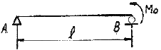
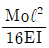
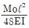
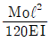
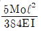
(정답률: 51%)
15. 외팔보의 자유단에 하중 P가 작용할 때, 이 보의 굽힘에 의한 탄성 변형에너지를 구하면? (단, 보의 굽힘강성 EI는 일정하다.)
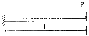
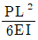
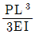
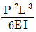
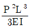
(정답률: 61%)
16. b × h =20cm × 40cm의 외팔보가 두가지 하중을 받고 있을 때 분포하중 ω를 얼마로 하면 안전하게 지지할 수 있는가? (단, 허용굽힘응력 σa=10MPa이다.)
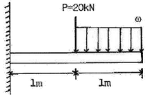
- 22 KN/m
- 35 KN/m
- 53 KN/m
- 55 KN/m
(정답률: 50%)
17. 직경 10cm,길이 3m인 양단의 고정된 2개의 원형기둥에 가해줄 수 있는 최대하중은? (단, E=200000MPa, σr=280MPa)
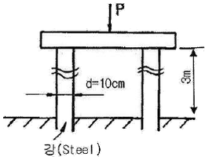
- 2800 KN
- 4400 KN
- 7800 KN
- 8770 KN
(정답률: 50%)
18. 포아송(Poission)비가 0.3인 재료에서 탄성계수(E)와 전단탄성계수(G)의 비(E/G)는?
- 0.15
- 1.5
- 2.6
- 3.2
(정답률: 66%)
19. 그림에서 윗면의 지름이 d, 높이가 ℓ인 원추형의 상단을 고정할 때 이 재료에 발생하는 신장량 δ의 값은? (단, 단위 체적당의 중량을 γ, 탄성계수를 E라 함)
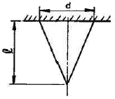
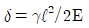
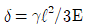
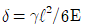
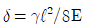
(정답률: 52%)
20. 그림과 같은 구조물에서 AB 부재에 미치는 힘은?
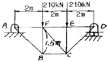
- 250 KN
- 350 KN
- 450 KN
- 150 KN
(정답률: 56%)
2과목: 기계열역학
21. 외부에서 받은 열량이 모두 내부에너지 변화만을 가져오는 완전가스의 상태변화는?
- 정적변화
- 정압변화
- 등온변화
- 단열변화
(정답률: 61%)
22. 질량 4kg의 액체를 15℃에서 100℃까지 가열하기 위해 714 kJ의 열을 공급하였다면 액체의 비열은 몇 J/kgㆍK인가?
- 1100
- 2100
- 3100
- 4100
(정답률: 71%)
23. 50℃, 25℃, 10℃의 온도인 3가지 종류의 액체 A, B, C가 있다. A와 B를 동일중량으로 홉합하면 40℃로 되고, A와 C를 동일 중량으로 혼합하면 30℃로 된다. B와 C를 동일중량으로 혼합할 때는 몇 ℃로 되겠는가?
- 16.0℃
- 18.4℃
- 20.0℃
- 22.5℃
(정답률: 52%)
24. 응축기 온도가 40℃이고, 증발기 온도가-20℃인 이상 냉동사이클의 성능계수(COP)는?
- 5.22
- 4.22
- 4.02
- 3.22
(정답률: 68%)
25. 상태 1에서 경로 A를 따라 상태 2로 변화하고 경로 B를 따라 다시 상태 1로 돌아오는 사이클이 있다. 아래의 사이클에 대한 설명으로 틀린 것은?
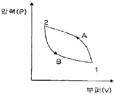
- 사이클 과정 동안 시스템의 내부에너지 변화량은 0이다.
- 사이클 과정 동안 시스템은 외부로부터 순(net) 일을 받았다.
- 사이클 과정 동안 시스템의 내부에서 외부로 순(net)열이 전달되었다.
- 이 그림으로 사이클 과정 동안 총 엔트로피 변화량을 알 수 없다.
(정답률: 41%)
26. 다음 P-h선도를 이용한 중기압축 냉동기의 성능계수는 얼마인가?
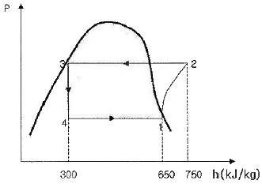
- 3.5
- 4.5
- 5.5
- 6.5
(정답률: 56%)
27. 이상기체의 내부에너지는 무엇의 함수인가?
- 온도만의 함수이다.
- 압력만의 함수이다.
- 온도와 압력의 함수이다.
- 비체적만의 함수이다.
(정답률: 61%)
28. 할 밀폐계가 190kJ의 열을 받으면서 외부에 20KJ의 일을 한다면 이 계의 내부에너지의 변화는 약 얼마인가?
- 210 kJ 만큼 증가한다.
- 210 kJ 만큼 감소한다.
- 170 kJ 만큼 증가한다.
- 170 kJ 만큼 감소한다.
(정답률: 64%)
29. 시속 30km로 주행하고 있는 질량 306kg의 자동차가 브레이크를 밟았더니 8.8m애서 정지했다. 베어링 마찰을 무시하고 브레이크에 의해서 제동된 것으로 보았을 때, 브레이크로부터 발생한 열량은 얼마인가? (단, 차륜과 도로면의 마찰계수는 0.4로 한다.)
- 약 25.6 kJ
- 약 20.6 kJ
- 약 15.6 kJ
- 약 10.6 kJ
(정답률: 42%)
30. 랭킨 사이클을 터빈 입구 상태와 응축기 압력을 그대로 두고 사이클로 바꾸었을 때 랭킨 사이클과 비교한 재생 사이클의 특징에 대한 설명으로 틀린 것은?
- 터빈일이 크다.
- 사이클 효율이 높다
- 응축기의 방열량이 작다.
- 보일러에서 가해야 할 열량이 작다.
(정답률: 24%)
31. 밀폐계에서 기체의 압력이 100KPa으로 일정하게 유지 되면서 체적이 1m3에서 2m3으로 증가되었을 때 옳은 설명은?
- 밀폐계의 에너지 변화는 없다.
- 외부로 행한 일은 100KJ이다.
- 기체가 이상기체라면 온도가 일정하다
- 기체가 받은 열은 100KJ이다.
(정답률: 65%)
32. 비열이 0.475kJ/kgㆍK인 철 10kg을 20℃에서 80℃로 올리는데 필요한 열량은 몇 kJ인가?
- 222
- 232
- 285
- 315
(정답률: 70%)
33. 어느 발명가가 바닷물로부터 매시간 1800kJ의 열량을 공급받아 0.5kW 출력의 열기관을 만들었다고 주장한다면, 이 사실은 열역학 제 및 법칙에 위반 되겠는가?
- 제 0법칙
- 제 1법칙
- 제 2법칙
- 제 3법칙
(정답률: 60%)
34. 과열과 과냉이 없는 중기압축 냉동사이클에서 응축온도가 일정하고 증발온도가 낮을수록 성능계수는 어떻게 하겠는가?
- 증가한다.
- 감소하다.
- 일정하다.
- 성능계수와 응축온도는 무관하다.
(정답률: 46%)
35. 어떤 유체의 밀도가 741kg/m3이다. 이 유체의 비체적은 약 몇 m3/kg인가?
- 0.78×10-3
- 1.35×10-3
- 2.35×10-3
- 2.98×10-3
(정답률: 70%)
36. 공기 10kg이 정적 과정으로 20℃에서 250℃까지 온도가 변하였다. 이 경우 엔트로피의 변화량은? (단, 공기의 Cv=0.717 kJ/kgㆍK이다.)
- 약 2.39 kJ/K
- 약 3.07 kJ/K
- 약 4.15 kJ/K
- 약 5.31 kJ/K
(정답률: 67%)
37. 100℃와 50℃ 사이에서 작동되는 가역열기관의 최대 열효율은 약 얼마인가?
- 55.0%
- 16.7%
- 13.4%
- 8.3%
(정답률: 67%)
38. 27kPa의 압력차는 수은주로 어느 정도 높이가 되겠는가? (단, 수은의 밀도는 13590kg/m3이다.)
- 약 158mm
- 약 203mm
- 약 265mm
- 약 557mm
(정답률: 67%)
39. 어떤 작동 유체가 550K의 고열원으로부터 20kJ의 열량을 공급받아 250K의 저열원에 14kJ의 열량을 방출할 때 이 사이클은?
- 가역이다.
- 비가역이다.
- 가역 또는 비가역이다.
- 가역도 비가역도 아니다.
(정답률: 52%)
40. 냉동기의 효율은 성능 계수로 나타낸다. 냉동기의 성능 계수에 대한 설명 중 잘못된 것은?
- 성능 계수는 증발기에서 흡수된 열량과 압축기에 공급된 일량의 비로 정의된다.
- 성능 계수는 일반적으로 1보다 작다.
- 냉동기의 작동 온도에 따라 성능 계수는 변한다.
- 동일한 작동 온도에서 운전되는 냉동기라도 사용되는 냉매에 따라 성능 계수는 달라질 수 있다.
(정답률: 67%)
3과목: 기계유체역학
41. 다음 중 무차원에 해당하는 것은?
- 비중
- 비중량
- 점성계수
- 동점성계수
(정답률: 65%)
42. 4℃ 물의 체적 탄성계수는 2.0×109 N/m2이다. 이 물에서의 음속은 약 몇 m/s인가?
- 141
- 341
- 19300
- 1414
(정답률: 51%)
43. 바다 속 임의의 한 지점에서 측정한 계기압력이 98.7MFa이다. 이 지점의 깊이는 몇 m인가? (단, 해수의 비중량은 10kN/m3이다.)
- 9540
- 9635
- 9680
- 9870
(정답률: 68%)
44. 수면의 높이가 지면에서 h인 물통 벽의 측면에 구멍을 뚫고 물을 지면으로 분출시킬 때 지면을 기준으로 물이 가장 멀리 떨어지게 하는 구멍의 높이는?
- 3/4h
- 1/2h
- 1/4h
- 1/3h
(정답률: 30%)
45. 30명의 흡연가가 피우는 담배연기를 처리할 수 있는 흡연실에서 1인당 최소 30L/s의 신선한 공기를 필요로 할 때, 공급되어야 할 공기의 최소 유량은 몇 m3/s인가?
- 0.9
- 1.6
- 2.0
- 2.3
(정답률: 68%)
46. 원관내를 완전한 층류로 흐를 경우 관마찰계수 f는?
- 상대 조도만의 함수가 된다.
- 마하수만의 함수이다.
- 오일러수만의 함수이다.
- 레이놀즈수만의 함수이다.
(정답률: 68%)
47. 그림과 같은 사이펀에 물이 흐르고 있다. 사이펀의 안지름은 5cm이고, 물탱크의 수면은 항상 일정하게 유지된다고 가정한다. 수면으로부터 출구 사이의 총 손실 수두가 1.5m이면, 사이펀을 통해 나오는 유량은 약 몇 m3/min인가?
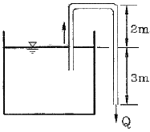
- 0.38
- 0.41
- 0.64
- 0.92
(정답률: 43%)
48. 유속 V인 균일 유동장애 놓인 물체 둘레의 순환이 Γ(Kutta-Joukowski의 정리)은? (단, 유체의 밀도는 ρ라 한다.)
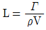
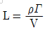
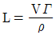
- L=ρVΓ
(정답률: 33%)
49. 다음 중 경계층에서 유동바리 현상이 발생할 수 있는 조건은?
- 유체가 가속될 때
- 순압력구배가 존재할 때
- 역압력구배가 존재할 때
- 유체의 속도가 일정할 때
(정답률: 68%)
50. 밀도가 ρ1, ρ2인 두 종류의 액체 속에 완전히 잠긴 물체 무게를 스프링 저울로 측정한 결과 각각 W1, W2이었다. 공기 중에서 이 물체의 무게 G는?
(정답률: 23%)
51. 다음 그림에서 관입구의 부차적 손실계수 K는? (단, 관의 안지름은 20mm, 관마찰계수는 0.0188이다.)
- 0.0188
- 0.273
- 0.425
- 0.621
(정답률: 40%)
52. 2차원 유동 중 속도포텐셜이 존재하는 것은? (단 이다.)
(정답률: 26%)
53. 압력과 밀도로 각각 P, ρ할 때 의 차원은? (단, M, L, T는 각각 질량, 길이, 시간의 차원을 나타낸다.)
(정답률: 55%)
54. 유체 속에 잠겨있는 경사진 판의 윗면에 작용하는 압력힘의 작용점에 대한 설명 중 맞는 것은?
- 판의 도심보다 위에 있다.
- 판의 도심이 있다.
- 판의 도심보다 아래에 있다.
- 판의 도심과는 관계가 없다.
(정답률: 62%)
55. 다음 중 원관 내 층류유동의 전단응력분포로 옳은 것은?
(정답률: 59%)
56. 직경이 30mm이고, 틈새가 0.2mm인 슬라이딩 베어링이 1800rpm으로 회전할 때 윤활유에 작용하는 전단응력은 약 몇 Pa 인가? (단, 윤활유의 점성계수 μ=0.38Nㆍs/m2이다.)
- 5372
- 8550
- 10744
- 17100
(정답률: 37%)
57. 유량계수가 0.75 이고, 옥지름이 0.5m인 벤투리미터를 사용하여 안지름이 1m인 송유관 내의 유량을 측정하고 있다. 벤투리 입구와 목의 압력차가 수은주 80mm이면 기름의 질량유량은 몇 kg/s인가? (단, 기름의 비중은 0.9, 수은의 비중은 13.6이다.)
- 158
- 166
- 666
- 739
(정답률: 23%)
58. 길이 125mn, 속도 9m/s인 선박의 모형실험을 길이 5m인 모형선으로 프루드(Froude), 상사가 성립되게 실험하려면 모형선의 속도는 약 몇m/s로 해야 하는가?
- 1.80
- 4.02
- 0.36
- 36
(정답률: 64%)
59. 그림과 같이 유량 Q=0.03m3/s의 물 분류가 V=40m/s의 속도로 곡면판에 충돌하고 있다. 판은 고정되어 있고 휘어진 각도가 135°일 때 분류로부터 판이 받는 충격력의 크기는 약 몇 N인가?(오류 신고가 접수된 문제입니다. 반드시 정답과 해설을 확인하시기 바랍니다.)
- 2049
- 2217
- 2638
- 2899
(정답률: 39%)
60. 2차원 유동장에서 속도벡터가 일 때 점(3, 5)을 지나는 유선의 기울기는? (단, 는 x, y 방향의 단위벡터이다.)
- 1/3
- 1/5
- 1/9
- 1/12
(정답률: 52%)
4과목: 기계재료 및 유압기기
61. 강에서 열처리 조직으로 경도가 가잔 큰 것은?
- 펄라이트
- 페라이트
- 마텐자이트
- 오스테나이트
(정답률: 78%)
62. 자기변태의 설명으로 옳은 것은?
- 상은 변하지 않고 자기적 성질만 변한다.
- 자기변태점에서는 열을 흡수하거나 방출한다.
- 자기변태점에서는 자유도가 0이므로 온도가 정체되다.
- 원자내부의 변화로 자기적 성질이 비연속적으로 변화한다.
(정답률: 76%)
63. 질화법과 침탄법을 비교 설명한 것으로 틀린 것은?
- 침탄법보다 질화법이 경도가 높다.
- 침탄법은 침탄 후에도 수정이 가능하지만 질화법은 질화 후의 수정은 불가능하다.
- 침탄법은 침탄 후에는 열처리가 필요없고, 질화법은 질화 후에는 열처리가 필요하다.
- 침탄법은 경화에 의한 변형이 생기지만, 질화법은 경화에 의한 변형이 적다.
(정답률: 61%)
64. 델타 메탈 이라고도 하며 강도가 크고 내식성아 좋아 광산 기계, 선박용 기계, 화학 기계 등에 사용되는 것은?
- 철 황동
- 규소 황동
- 네이벌 황동
- 애드미럴티 황동
(정답률: 45%)
65. 탄소강에 미치는 인(P)의 영향으로 옳은 것은?
- 인성과 내식성을 주는 효과는 있으나 청열취성을 준다.
- 강도와 경도는 감소시키고, 고온취성이 있어 가공이 곤란하다.
- 경화능이 감소하는 것 이외에는 기계적 성질에 해로운 원소이다.
- 강도와 경도를 증가시키고 연신율을 감소시키며 상온취성을 일으킨다.
(정답률: 76%)
66. 주조성, 가공성, 내마멸성 및 강도가 우수하고 인성, 연성, 가공성 및 경화능 등이 강의 성질과 비슷하며 자동차용 주물로 가장 적합한 주철은?
- 내열주철
- 보통주철
- 칠드주철
- 구상흑연주철
(정답률: 41%)
67. 고속도공구강에서 요구되는 일반적 성질과 관련이 없는 것은?
- 전연성
- 고온경도
- 내마모성
- 내충격성
(정답률: 68%)
68. 지름 15mm의 연강 봉에 5000kgf 의 인장하중이 작용할 때 생기는 응력은 약 몇 kgf/mm2 인가?
- 10
- 18
- 24
- 28
(정답률: 73%)
69. 일반적인 주철의 장점이 아닌 것은?
- 주조성이 우수하다.
- 고온에서 쉽게 소성변형 되지 않는다.
- 가격이 강에 비해 저렴하여 널리 이용된다.
- 복잡한 형상으로도 쉽게 주조된다.
(정답률: 64%)
70. 톱날이나 줄의 재료로 가장 적합한 합금은?
- 황동
- 고탄소강
- 알루미늄
- 보통주철
(정답률: 66%)
71. 전기모터나 내연기관 등의 원동기로부터 공급받은 동력을 기계적 유압에너지로 변환시켜 작동매체인 작동유(압축유)를 통하여 유압계통에 에너지를 가해주는 기기는?
- 유압 모터
- 유압 밸브
- 유압 펌프
- 유압 실린더
(정답률: 49%)
72. 다음 중 압력단위의 환산이 잘못된 것은?
- 1bar=9.80665Pa
- 1mmH2O=9.80665Pa
- 1atm=1.01325×105Pa
- 1Pa=1.01972×10-5kgf/cm2
(정답률: 61%)
73. 유압유를 이용하여 진동을 흡수하거나 충격을 완화시키는 기기는?
- 유체 클러치(fluid clutch)
- 유체 커플링(fluid coupling)
- 쇼크 업소버(shock absorbr)
- 토크 컨버터(torque converter)
(정답률: 77%)
74. 기름의 압축률이 6.8×10-5cm2/kg일 때 압력을 0에서 100kgf/cm2 까지 압축하면 체적은 몇 %감소하는가?
- 0.48%
- 0.68%
- 0.89%
- 1.46%
(정답률: 63%)
75. 작동유가 갖고 있는 에너지를 잠시 저축했다가 이것을 이용하여 완충작용도 할 수 있는 부품은?
- 축압기
- 제어밸브
- 스테이터
- 유체커플링
(정답률: 71%)
76. 유압기기의 통로(또는 관로)에서 탱크(또는 매니폴드 등)로 돌아오는 액체 또는 액체가 돌아오는 현상을 나타내는 용어는?
- 누설
- 드레인(drain)
- 컷오프(cut off)
- 인터플로(interflow)
(정답률: 68%)
77. 다음 기호 중 유량계를 표시하는 것은?
(정답률: 53%)
78. 유압회로에서 정규 조작방법에 우선하여 조작할 수 있는 대체 조작수단으로 정의되는 에너지 제어 조작방식 일반에 관한 용어는?
- 직접 파일럿 조작
- 솔레노이드 조작
- 간접 파일럿 조작
- 오버라이드 조작
(정답률: 29%)
79. 오일 탱크의 구비 조건에 관한 설명으로 옳지 않은 것은?
- 오일 탱크의 바닥면은 바닥에서 일정 간격 이상을 유지하는 것은 바람직하다.
- 오일 탱크는 스트레이너의 삽입이나 분리를 용이하게 할 수 있는 출입구를 만든다.
- 오일 탱크 내에 방해판은 오일의 순환거리를 짧게 하고 기포의 방출이나 오일의 냉각을 보존한다.
- 오일 탱크의 용량은 장치의 운전중지 중 장치 내의 작동유가 복귀하여도 지장이 없을 만큼의 크기를 가져야한다.
(정답률: 71%)
80. 구조가 가장 간단하며 값이 싸고 유압유에 섞인 이물질에 의한 고장 발생이 적고 가혹한 조건에 잘 견디는 유압 모터로 가장 적합한 것은?
- 기어 모터
- 볼 피스톤 모터
- 액시얼 피스톤 모터
- 레이디얼 피스톤 모터
(정답률: 63%)
5과목: 기계제작법 및 기계동력학
81. 상온에서 가공할 수 없는 내열합금이나 담금질 강과 같은 강한 재질의 고온가공(hot machining) 특징이 아닌 것은?
- 소비동력이 감소한다.
- 공구 수면이 연장된다.
- 공작물의 피삭성이 증가한다.
- 빌트 업 에지가 발생하여 가공면이 나쁘게 된다.
(정답률: 42%)
82. 서보제어방식 중 아래 그림과 같이 모터에 내장된 펄스 제너레이터에서 속도를 검출하고, 엔코더에서 위치를 검출하여 피드백하는 제어방식은?
- 개방회로 방식
- 복합회로 방식
- 폐쇄회로 방식
- 반 폐쇄회로 방식
(정답률: 50%)
83. 절삭유제를 사용하는 목적이 아닌 것은?
- 공작물과 공구의 냉각
- 공구 윗면과 칩 사이의 마찰계수 증대
- 능률적인 칩 제거
- 절삭열에 의한 정밀도 저하 방지
(정답률: 68%)
84. 삼침법으로 나사를 측정할 때 유료지름(mm)은 약 얼마인가? (단, 외측마이트로미터로 측정한 외경은 38.256mm, 피치 3mm의 나사이며, 준비된 핀의 지름은 1.8mm로 한다.)
- 35.33
- 35.45
- 35.65
- 35.76
(정답률: 30%)
85. 보석, 유리, 자기 등을 정밀하게 가공하는데 가장 적합한 가공 방법은?
- 전해 연삭
- 방전 가공
- 전해 연마
- 초음파 가공
(정답률: 63%)
86. 용접봉의 기호 중 E4324에서 세 번째 숫자 2의 표시는 용접자세를 나타낸다. 어떠한 자세인가?
- 전 자세
- 아래보기 자세
- 전 자세 또는 특정자세
- 아래보기와 수평 필릿자세
(정답률: 24%)
87. 주물의 후처리 작업이 아닌 것은?
- 주물표면을 깨끗이 청소한다.
- 쇳물아궁이와 라이저를 절단한다.
- 주형의 각부로부터 가스빼기를 한다.
- 주입금속인 응고되면 주형을 해체한다.
(정답률: 40%)
88. 곧은 날을 갖는 직선 절단기에서 전단각에 관한 설명으로 틀린 것은?
- 전단각이란 아랫날에 대한 윗날의 기울기 각도이다.
- 전단각이 크면 절단된 판재의 끝면이 고르지 못하다.
- 전단각은 일반적으로 박판에서 크게, 후판에는 작게 한다.
- 절단 날에 전단각을 두는 것은 절다날 때, 충격을 감소시키고 절단소요력을 감소시키기 위한 것이다.
(정답률: 47%)
89. 프레스가공에서 전단가공에 해당하는 것은?
- 펀칭
- 비딩
- 시밍
- 업세팅
(정답률: 57%)
90. 두께 50mm의 연강판을 압연 롤러를 통과시켜 40mm가 되었을 때 압하율(%)은?
- 10
- 15
- 20
- 25
(정답률: 68%)
91. 강체의 평면운동에 대한 설명 중 옳지 않은 것은?
- 평면운동은 병진과 회전으로 구분할 수 있다.
- 평면운동은 순간중심점에 대한 회전으로 생각할 수 있다.
- 순간중심점을 위치가 고정된 점이다.
- 곡선경로를 움직이더라도 병진운동이 가능하다.
(정답률: 44%)
92. 질량 30kg의 물체를 담은 두레박 B가 레일을 따라 이동하는 크레인 A에 수직으로 매달려 이동하고 있다. 매단 줄의 길이는 6m이다. 일정한 속도로 이동하던 크레인이 갑자기 정지하자, 두레박 B가 수평으로 3m까지 흔들렸다. 크레인 A의 이동속력은 몇 m/s인가?
- 1
- 2
- 3
- 4
(정답률: 28%)
93. 계의 등가 스프링 상구 값은 어떤 것인가?
(정답률: 44%)
94. 스프링으로 지지되어 있는 질량의 정적처짐이 0.⑤cm 일 때 스프링의 고유진동수는 얼마인가?
- 22.3Hz
- 223Hz
- 310Hz
- 3100Hz
(정답률: 54%)
95. 총포류의 반동을 감소시키는 제동장치는 피스톤과 포신의 이동속도(ｕ)에 비례하여 감속하게 된다. 즉, 가속도 a=-kv의 관계로 나타날 때 속도 ｕ를 시간 t에 대한 함수로 나타내는 수식은? (단, 초기 속도는 ｕ0, 초기 위치는 0이라고 가정한다.)
- v=v0t
- v=v0e-kt
- v=v0-kt
- v=v0(1-e-kt)
(정답률: 31%)
96. 각각 중량이 10kN인 객차 10량이 2m/s2의 가속도로 직선주로를 달리고 있은 때, 5번째와 6번째 차량사이의 연결부에 작용하는 힘은?
- 8.2kN
- 9.2kN
- 10.2kN
- 11.2kN
(정답률: 46%)
97. 계의 고유진동수에 영향을 미치지 않는 것은?
- 진동물체의 질량
- 계의 스프링 계수
- 계의 초기조건
- 계를 형성하는 재료의 탄성계수
(정답률: 41%)
98. 1자유도 시스템 A, B의 전달률을 나타낸 그래프에서 두 시스템의 감쇠비 ξ의 관계로 옳은 것은?
- ξA＜ξB
- ξB＜ξA
- ξA=ξB
- |ξA|=|ξB|
(정답률: 38%)
99. 길이 l, 질량 m인 균일한 막대가 의 각속도로 회전하고 있다. 막대의 운동에너지는 얼마인가?
(정답률: 29%)
100. 20m/s의 같은 속력으로 달리던 자동차 A, B가 교차로에서 직각으로 충돌하였다. 충돌 직후 자동차A의 속력은 몇 m/s 인가? (단, 자동차 A, B의 질량은 동일하며 반발계수 e=0.7, 마찰은 무시한다.)
- 17.3
- 18.7
- 19.2
- 20.4
(정답률: 33%)
이유는 굽힘 모멘트 선도에서 가장 높은 점이 해당 보의 중심점인데, 이는 보의 중심에 가장 많은 하중이 집중되기 때문입니다. 따라서 이 점에서의 굽힘 모멘트가 가장 크다는 것을 의미합니다.